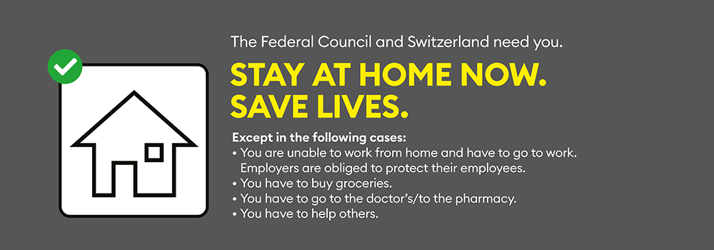

WARNING
Always call your doctor first when you suspect a COVID-19 infection. Do not visit testing facilities without being told so by a health professional!
Disclaimer: The information on this map is not accurate nor does it represent any medical or safety advice. This
site is only for education purposes.
Offical FOPH information
